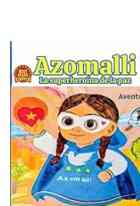
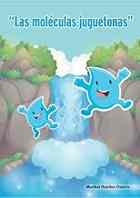

Azomalli
Literatura infantil · Paz
Una propuesta infantil centrada en la paz, la imaginación y el aprendizaje a través de una heroína y sus aventuras.
Ver libro →Literatura, educación y trabajo colectivo: una trayectoria construida entre libros, autores, encuentros culturales y proyectos para la paz.
Explorar sus librosVer bibliografíaMaribel Benítez Osorio, también conocida como Mary Benítez, es escritora, poeta, antologadora, editora independiente, educadora y promotora cultural. Su formación reúne Educación Primaria, Docencia, Administración de la Educación Superior, Derecho y Doctorado en Educación.
Su actividad no se limita a la autoría individual. Ha participado en recopilaciones, compilaciones, antologías y proyectos colectivos, además de impulsar espacios donde escritores, artistas, lectores y educadores pueden encontrarse alrededor de la palabra.
Es miembro fundadora de GRUEM, Grupo de Escritores Mexiquenses, y fundadora del Encuentro de Escritores y Artistas Juntos por la Paz. Como socia fundadora y Directora de Operaciones de InnovateBooks, participa también en proyectos de edición independiente y acompañamiento de autores.
Una selección de sus títulos recientes. La portada de cada libro funciona como enlace directo a su edición o búsqueda disponible.

Una propuesta infantil centrada en la paz, la imaginación y el aprendizaje a través de una heroína y sus aventuras.
Ver libro →
Una historia que acerca a los lectores jóvenes al agua, su cuidado y la responsabilidad ambiental.
Ver libro →
Guía práctica para transformar una idea en libro y conocer el proceso de escritura y publicación.
Ver libro →
Edición en inglés de una historia que entrelaza sueños, amor, magia, aventura y fortaleza interior.
Ver libro →
Una novela de aventuras, amor y magia que incorpora autoestima, resiliencia y autoafirmación.
Ver libro →
Colección de cuentos que combina lectura y reflexión con temas que invitan al análisis.
Ver libro →La trayectoria de Maribel incluye autoría, poesía, recopilación, compilación y trabajo antológico. Esta sección distingue esas funciones para no presentar toda su producción como si tuviera el mismo carácter editorial.
Su producción incluye literatura infantil, cuentos para reflexionar, educación ambiental y obras que integran imaginación, valores y aprendizaje.
Una parte esencial de su trayectoria se desarrolla junto a otros escritores y artistas. La página reúne esa dimensión por separado para darle el peso que merece.
Grupo de Escritores Mexiquenses. Maribel es miembro fundadora y su actividad se vincula con escritores, antologías, encuentros y proyectos culturales.
Encuentro de Escritores y Artistas fundado por Maribel en Toluca, Estado de México, que relaciona literatura, arte, comunidad y cultura de paz.
Su trabajo incluye participación, recopilación, compilación y coordinación de publicaciones colectivas; no solamente libros de autoría individual.
Como socia fundadora y Directora de Operaciones participa en edición independiente y acompañamiento de proyectos literarios.
Libros para públicos diversos: infancia, narrativa, reflexión, poesía y formación para escritores.
Construcción y acompañamiento de obras donde convergen múltiples autores y perspectivas.
Encuentros y proyectos que utilizan la literatura como espacio de diálogo, inclusión y paz.
Recibe noticias sobre nuevos libros, presentaciones, encuentros y proyectos literarios.